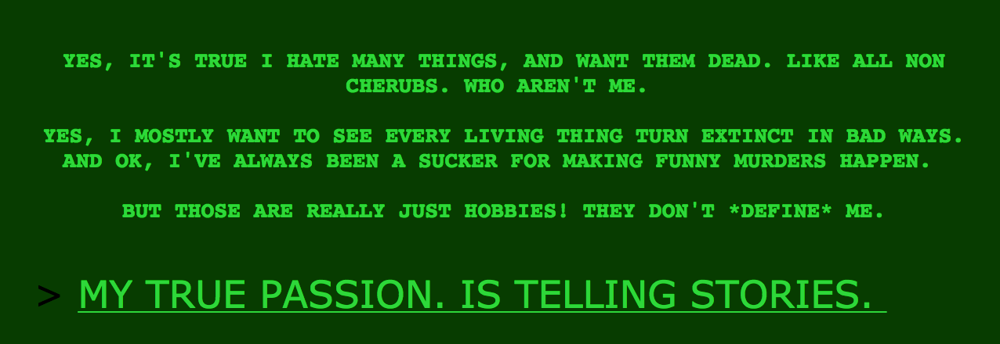

Don’t judge him by his hilariously murderous ways! Or by the fact that he can barely write a coherent thought.
“YES, IT’S TRUE I HATE MANY THINGS, AND WANT THEM DEAD. LIKE ALL NON CHERUBS. WHO AREN’T ME.”
I keep coming back to this. He hates all non-cherubs who aren’t him. But he is a cherub, so he’s already exempted from his hate. Am I overthinking things? I’m pretty sure he’s not meaning to say that he’s not a cherub, but it’s a weird thing to say.